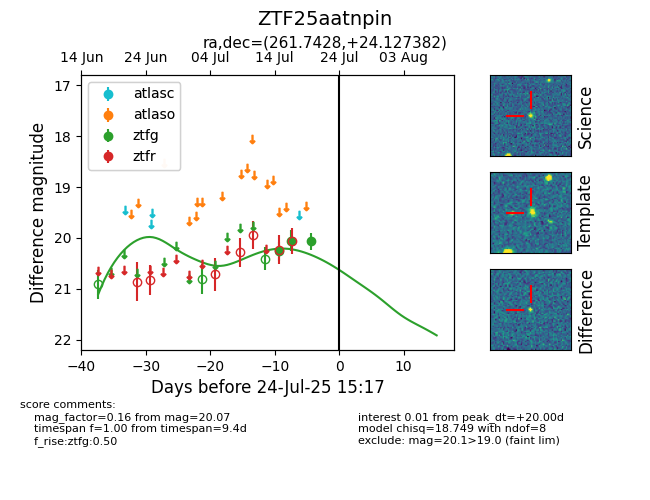

Target ZTF25aatnpin at 2025-07-24 15:17, see:
FINK: fink-portal.org/ZTF25aatnpin
Lasair: lasair-ztf.lsst.ac.uk/objects/ZTF25aatnpin
ALeRCE: alerce.online/object/ZTF25aatnpin
alt names
ZTF25aatnpin (ztf,fink)
coordinates:
equatorial (ra, dec) = (261.7428,+24.12738)
galactic (l, b) = (47.0336,+28.62106)
photometry
last ztfg=20.07
3 ztfg detections
